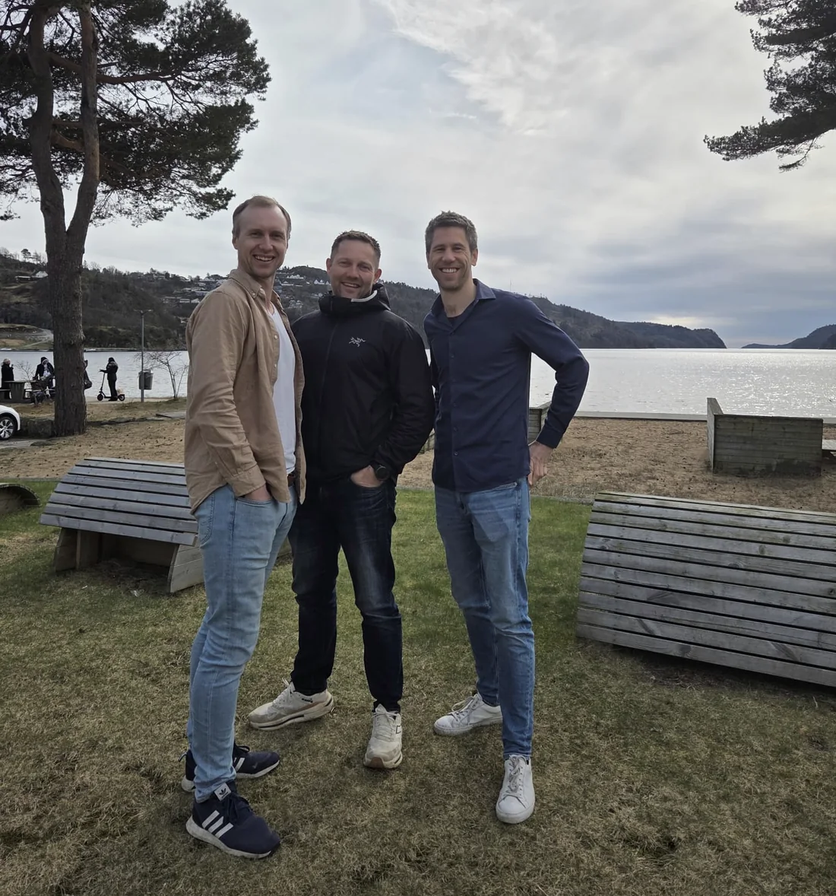

Her er hva vi vet.
Her er hva vi skal finne ut.
VERIFIED er et forskningsprosjekt om løsningsvalg i byggeprosjekter. Vi utvikler og tester en måte å sammenligne alternative løsninger på — og å vise hvor sikkert grunnlaget faktisk er.
Valgene tas før grunnlaget er samlet
I små og mellomstore byggeprosjekter tas mange sentrale løsningsvalg i tilbudsfasen: entreprenøren priser jobben og foreslår alternativer. Valgene får betydning for utslipp, levetid, vedlikehold og risiko lenge etterpå.
Informasjonen finnes — i produktdata, FDV-dokumentasjon, miljødeklarasjoner, levetidsdata og prislister — men ligger spredt, i ulike formater, og må ofte settes sammen for hånd.
Når forskjellene er uklare, kan det billigste alternativet virke best for kunden — selv om det koster mer over tid.
68 359 bedrifter var registrert i bygge- og anleggsnæringen 1. januar 2026.
91,2 %
av dem hadde færre enn ti ansatte, inkludert bedrifter uten ansatte.
Tallene gjelder hele bygge- og anleggsnæringen, ikke bare målgruppen til VERIFIED.
Kilde: SSB, tabell 10309
Mindre entreprenørbedrifter har ofte høy fagkompetanse, men tilgangen til ressurser for livsløpsvurderinger og kostnadsanalyser over levetiden varierer, og mye av kapasiteten er bundet i produksjon. Beslutningsgrunnlaget må derfor fungere i en travel tilbudsfase, ikke bare for spesialister.
Mye finnes allerede
Vi står ikke på bar bakke. Det finnes internasjonale standarder for livsløpsvurdering og livsløpskostnader, og en norsk standard for klimagassberegninger for bygninger. Flerkriterieanalyse er en etablert metode for å veie motstridende hensyn.
Det finnes verktøy. Norske løsninger kobler kalkyle, pris, materialmengder, produktdata og miljødeklarasjoner, og beregner og sammenligner klimagassutslipp. Internasjonale løsninger kombinerer livsløpsvurdering med livsløpskostnad, noen med synlig usikkerhet i klimatallene.
Flere av funksjonene VERIFIED skal bygge på, finnes allerede. I utvalget vi undersøkte, fant vi ingen løsning som gir små norske entreprenører et samlet, etterprøvbart beslutningsgrunnlag i tilbudsfasen.
Dette er en avgrenset gjennomgang. Den må oppdateres når underlaget utvides.Det viktigste er fortsatt åpent
Dette er ikke svakheter ved prosjektet. Det er derfor forskning.
- Kan datatypene kobles? Eksisterende løsninger dekker hver sin del. En samlet løsning er ikke dokumentert i vårt utvalg.
- Kan små bedrifter bruke det? Ressursbehov og anvendbarhet er ikke tilstrekkelig dokumentert.
- Vises usikkerheten godt nok? Ett verktøy viser usikkerhet i karbontall, men ikke gjennomgående på tvers av alle kriterier.
- Endrer grunnlaget valget? Vi fant ingen dokumentert metode for å måle om et slikt grunnlag endret eller bekreftet valget.
- Kan skadevirkninger fanges opp? En samlet behandling av klima, levetid, vedlikehold, ombruk, dokumentasjonskvalitet og teknisk risiko er ikke dokumentert i gjennomgangen.
Fra spredt informasjon til et grunnlag som kan etterprøves
Hovedmålet er å utvikle og teste en forskningsbasert beslutningsmodell for å sammenligne alternative løsninger og tilbud i små og mellomstore byggeprosjekter — etter faste vurderingskriterier, og med synlig kvalitet og usikkerhet i datagrunnlaget.
Prosjektet skal kartlegge datakilder, utvikle en åpen og begrunnet modell, teste hvordan forskjeller og usikkerhet bør vises, og prøve modellens nytte i konkrete løsningsvalg.
Vi skal ikke bare bygge en modell, men teste om den blir forstått, hvordan den brukes, og om den endrer eller bekrefter valget. Det er forskningsarbeidet.
Forskning på nederlandske boliglånsdata knytter energieffektivitet i bygg til lavere sannsynlighet for mislighold — men ikke til byggteknisk kvalitet, levetid eller vedlikeholdsdata.
En avgrenset pilot skal undersøke om denne dokumentasjonen er nyttig tilleggsinformasjon for et konkret behov som banken selv må definere på forhånd, i sin risikovurdering. Prosjektet forutsetter ikke at informasjonen forbedrer risikovurderingen — det er nettopp det som skal undersøkes.
Svake data skal være synlige, ikke bortgjemt
Arbeidet er planlagt stegvis: første versjon av modellen, utprøving i konkrete løsningsvalg, analyse, justering. Endelig forskningsdesign utformes sammen med forskningspartneren.
- Hver opplysning skal få en status. Vi skal registrere kilde, alder, enhet og produktnivå — og vise om den mangler, bygger på generelle data, er estimert eller verifisert. Reglene settes før utprøvingen og gjelder likt for alle. Slik forsvinner ikke svake data i en totalscore.
- Et minste informasjonsgrunnlag. Vi skal definere hvor mye som trengs for en faglig forsvarlig sammenligning. Er grunnlaget for tynt, vises det tydelig.
- Teknisk egnethet er en faglig port. Lavt beregnet klimagassutslipp er ikke nok ved svak fuktrobusthet, kort eller usikker levetid, stort vedlikeholdsbehov eller mangelfull dokumentasjon.
- Vi skiller mellom fire slags påstander. Vi måler det som kan observeres, beregner modellresultater, estimerer framtidige eller usikre størrelser, lar faglig skjønn avgjøre ved behov, og sier undersøker når metoden ikke er valgt.
Selve beslutningen og ansvaret ligger fortsatt hos entreprenør og kunde. Modellen velger ikke.
Hvor arbeidet står
Søknadsteksten foreligger som en revidert arbeidskandidat. Den er ikke innsendingsklar.
- Konsortium og rollefordeling er ikke bekreftet.
- Arbeidspakker, milepæler, budsjett og risiko krever partnerinformasjon og er ikke ferdigstilt.
- Vurdering av kjemikalier, sosiale forhold og andre skadevirkninger må kompletteres med fagpartnerne.
- Måleparametere for om grunnlaget endrer valg er ikke fastlagt på forhånd. Prosjektet skal utvikle og teste dem.
- Endelig avgrensning av målgruppen, forskningsdesign og metodevalg gjenstår.
Vi legger dette ut fordi et prosjekt om synlig datakvalitet bør tåle å vise sin egen.
